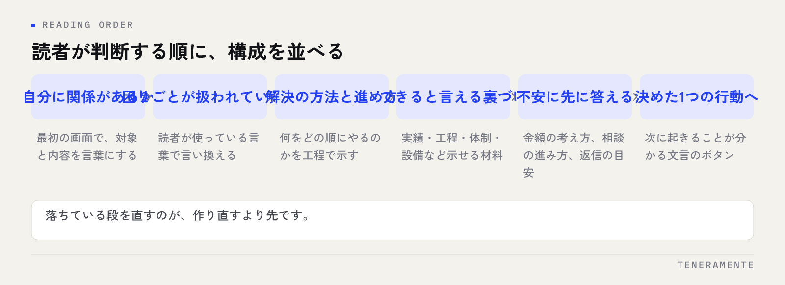

LPを作ってもらったのに、問い合わせが来ない。広告を回しても反応が薄い。このご相談でまず確かめるのは、デザインではありません。結論から申し上げると、LPの成果を分けているのは、作る前に決めた5つの決めごとです。この記事では、費用より先に決めるべき5つと、公開後に直す順番を整理します。
📌 この記事の結論
LPで成果を分けるのは、向ける相手・受け取りたい行動・約束できること・証拠・計測の5つです。この5つが決まっていないLPは、見た目をどれだけ整えても読者の判断材料がそろわず、作り直しても同じ場所で止まります。費用の内訳はLP制作費用の内訳に整理しています。
01LPで成果が出ないときは、作り直す前に原因を5つに切り分ける
LP（Landing Page、ランディングページ）で成果が出ないとき、最初に出てくる案は「デザインを変える」です。ところが、見た目を変えても結果が動かないことがよくあります。原因が見た目ではなく、ページが何を伝えるかの設計にあるためです。
成果が出ない状態は、次の5つに切り分けられます。誰に向けたページなのかが絞られていない。読者に取ってほしい行動が1つに決まっていない。約束していることが曖昧で、依頼したあとの流れが見えない。言っていることを裏づける材料がない。公開後に何を見て判断するかが決まっていない。
この5つは、どれも制作の前に決まる項目です。だからこそ、作り直しても解決しません。デザイナーを変えても、向ける相手が決まっていなければ、言葉は再び一般論に戻ります。
まず確かめるのは、5つのうちどれが決まっていないかです。1つだけ抜けているなら、そこを埋めるだけで反応が変わることがあります。全部が曖昧なら、ページを直す前に決める作業から始めます。ホームページ全体で問い合わせが来ない場合の切り分けはホームページから問い合わせが増えない原因に分けて書いています。
02費用より先に決める5つの要素
見積もりを取る前に、次の5つを自社で決めておきます。決まっていないまま発注すると、制作会社は一般的な構成で作るしかなく、どの業種にも当てはまる当たり障りのないページになります。
| 決めること | 決まっている状態 | 決まっていないと起きること |
|---|---|---|
| 向ける相手 | 困っている状況と立場が1つに絞られている | 誰にでも当てはまる言葉になり、誰も自分のことだと思わない |
| 受け取りたい行動 | 問い合わせ・資料請求・来店など1つに決まっている | ボタンが複数並び、読者が選べずに離脱する |
| 約束できること | 何をいつまでに、どこまでやるかが書ける | 期待とずれた問い合わせが来て、商談が進まない |
| 証拠 | 実績・工程・担当者・設備など示せる材料がある | 言い切るだけのページになり、信用されない |
| 計測 | 何をどの数で見るかが決まっている | 良くなったのか悪くなったのか分からず、直せない |
右の列は、公開後に必ず表面化します。とくに最後の計測は、決めるのに費用がかからないのに、抜けていると改善のすべてが止まります。
決める主体は自社です。制作会社が代わりに決められるのは、構成と表現の部分だけです。この5つを埋めた紙を1枚持って相談に行くと、見積もりの内容も提案の質も変わります。
03向ける相手を1人に絞ると、言葉が決まる
向ける相手を絞るのは、対象を狭めて機会を減らす作業ではありません。言葉を決めるための作業です。
絞り方には順番があります。まず業種や立場ではなく、どんな状況で困っているかで切ります。たとえば同じ工務店向けのLPでも、「これから集客を始めたい」状況と「広告は出しているが反応が落ちた」状況では、読みたい内容がまったく違います。前者は何から始めるかを知りたい。後者は何が原因かを知りたい。
絞るときに書き出す4つ
- どんな場面で困っているか（今まさに起きていること）
- これまでに何を試して、どう駄目だったか
- 何が不安で決めきれないでいるか
- 社内の誰が決めるのか（決める人と調べる人が違う場合がある）
この4つを文章で書き出すと、ページの見出しはほとんど決まります。困っている場面をそのまま言い換えた見出しは、読者に「自分のことが書いてある」と伝わるからです。
逆に、絞らないまま作ると、どの会社のLPにも書ける文章になります。実績の豊富さ、丁寧な対応、安心のサポート。どれも間違っていませんが、読者の判断には使えません。判断に使えない言葉は、どれだけ並べても成果にはつながりません。
04受け取りたい行動を1つに決め、構成をその順に並べる
受け取りたい行動が複数あると、読者は選べません。問い合わせ・資料請求・電話・LINE・見積もり依頼が同じ強さで並んだページは、どれも押されないまま閉じられます。主にしたい行動を1つ決め、残りは目立たない位置に置きます。

行動を1つに決めたら、構成はその行動に向かう順番に並べます。読者が判断するときに考える順番は決まっているので、ページもその順にします。
05最初の画面と、問い合わせ前の不安をページの中で消す
最初の画面で読者が判断しているのは、良いか悪いかではありません。自分に関係があるかどうかだけです。関係があると分かった人だけが下に読み進むため、ここで業種や対象の状況を言葉にしておきます。
最初の画面に必要なのは、何の会社・何のサービスか、誰のための内容か、ここで何ができるかの3つです。印象的な言い回しよりも、この3つが読めるかどうかが先です。写真の上に薄い文字を重ねて読みにくくなっているページは、この3つが伝わらないまま判断されています。
不安は、書けば消える
問い合わせの直前で止まる理由は、だいたい決まっています。いくらかかるのか見当がつかない。問い合わせたあとに営業されるのではないか。何を準備して相談すればいいのか分からない。どのくらいの期間がかかるのか。
先に書いておくと効く項目
相談の進み方（初回は何を話すのか）、返信までの目安、相談の段階で決めなくてよいこと、準備しておくと話が早い材料。これを書いておくと、問い合わせの心理的な負担が下がります。価格を出せない事情がある場合も、何で金額が変わるかだけは書けます。
書けることを書かずに「まずはお気軽にご相談ください」とだけ置いているページは、読者に判断材料を渡していません。不安は、消すというより先に答えておくものです。
06公開後に見る数字と、直す順番
LPは公開した時点では未完成です。読者がどこで止まるかは、出してみないと分かりません。そのため、見る数字と直す順番を先に決めておきます。
見るのは4か所だけで足ります。何人来たか。最初の画面から下に進んだか。ページの下まで読まれたか。問い合わせに至ったか。この4か所のどこで落ちているかで、直す場所が決まります。
| 落ちている場所 | 疑うこと | 先に試すこと |
|---|---|---|
| 来る人が少ない | 流入の経路そのもの | 広告や検索の側を見る。ページを直しても変わらない |
| 最初の画面で帰る | 対象と内容が伝わっていない | 見出しを、困っている場面の言い換えに変える |
| 下まで読んで帰る | 判断材料が足りない | 工程・事例・金額の考え方・FAQを足す |
| フォームで止まる | 入力の負担と不安 | 項目を削る。必須を減らす。送信後の流れを書く |
直す順番は、上から順です。流入に問題があるのにページの文章を直しても、見ている人が増えないので結果は動きません。どこで落ちているかを決めてから直すのが、改善の最短経路です。
直す間隔は、判断できる数が集まってからにします。数日の上下に反応して毎週作り変えると、何が効いたのか分からなくなります。
07公開前のチェックリストと、よくある失敗とその避け方
公開前に、次の項目を上から確かめます。どれも社内で確認できます。
- 向ける相手の状況が、最初の画面の言葉に入っているか
- 受け取りたい行動が1つに決まり、ボタンの文言がその行動と一致しているか
- 問い合わせボタンに、スクロールの途中からでも到達できるか
- 金額について、書ける範囲のことが書かれているか（考え方・変わる条件でもよい）
- 相談の進み方と、返信までの目安が書かれているか
- 言い切っている内容に、裏づけとなる材料が付いているか
- スマートフォンで、文字が読める大きさか・電話番号がタップできるか
- フォームの必須項目が、本当に必要なものだけになっているか
- 送信後に何が起きるか（確認メール・返信の時期）が書かれているか
- 数字を見る仕組みが入っていて、公開初日から記録が残るか
よくある失敗と、その避け方
会社の紹介から始める。読者はまだ会社に興味がありません。自分の困りごとが扱われていると分かってから、はじめて作り手に関心が向きます。会社の説明は中ほどに置きます。
社内の言葉をそのまま使う。業界内で通じる略語や、社内の工程名は読者に通じません。相談のときにお客様が使っていた言葉に置き換えます。
ボタンの文言が「送信」のまま。何が起きるのか分からないボタンは押されません。相談内容を送る、資料を受け取るなど、次に起きることを書きます。
実績の数を並べて終わる。数は根拠の一部でしかありません。どういう状況の相手に、何をして、どう変わったのかが書かれていないと、読者は自分に当てはめられません。なお、載せる数字は実在のものだけにします。
公開後に手を入れられない形で納品される。文章を1行変えるたびに依頼して反映を待つ形だと、改善が止まります。自社で直せる範囲を、契約の前に確認します。
08自分で進める場合と、専門家に任せる場合の分かれ目
この記事の内容は、自社だけでも進められます。分かれ目になるのは次の3点です。
1つ目は、決める作業に時間を取れるかどうかです。向ける相手と約束できることを決めるのは、社内しかできません。ここに数時間を確保できるなら、残りは外に任せても形になります。逆に決める作業ごと外に出そうとすると、どこかで必ず止まります。
2つ目は、文章を書く人がいるかどうかです。材料を箇条書きで出すところまでは社内でできても、読む順番に組み立てる作業は慣れが要ります。箇条書きまでを自社、文章として整えるところを外、という分け方が現実的です。
3つ目は、公開後に続けられるかどうかです。LPは出したあとに直して育てるものなので、数字を見る人と直す手段が社内に残らないと、公開した形のまま置かれます。社内に見る人がいない場合は、見て報告する部分まで含めて依頼先を選びます。
迷うときは、公開から3か月の間に何回手を入れる予定があるかを考えてみてください。何度も直す前提なら、直せる形と相談できる相手を確保しておく。1回作って置いておく前提なら、そもそもLPである必要があるかを先に考え直したほうが早い場合もあります。
09よくある質問
デザインを新しくすれば問い合わせは増えますか？
LPは1ページに全部入れるべきですか、短いほうがよいですか？
問い合わせフォームの項目は、どこまで減らせばよいですか？
実績や事例が少ない場合、証拠には何を載せられますか？
広告を止めるとLPへの訪問が止まります。検索から来る形にできますか？
10まとめ：成果を分けるのは、作る前に決めた5つ
LPで成果が出ないときの順番は決まっています。デザインを疑う前に、向ける相手・受け取りたい行動・約束できること・証拠・計測の5つのうちどれが決まっていないかを確かめる。相手は困っている状況で絞る。行動は1つに決め、構成を読者が判断する順に並べる。最初の画面では、自分に関係があるかどうかだけを伝える。不安は先に書いて消す。公開後は4か所の数字を見て、落ちている場所から順に直す。
逆に、総額と見た目だけで判断して作ると、きれいなのに誰も問い合わせないページが残ります。LPは作品ではなく、読者の判断を進めるための道具です。
TENERAMENTEなら、この記事で挙げた「決めきれずに止まる」「公開後に直せない」という2つの詰まりを、進め方の側で外します。ご相談ではまず、向ける相手と受け取りたい行動をその場で一緒に言葉にし、書ける約束と出せる証拠を洗い出してから構成に入ります。原稿は、自社でしか書けない材料を箇条書きでいただければ、読む順番に組み立てる部分をこちらで引き受けます。納品は管理画面から見出し・文章・写真を差し替えられる形で行い、差し替えの代行も毎月1回まで含めているため、反応を見て直したい箇所をその都度抱えずに回せます。制作費0円・月額1万円（税別）で始められる形と、月額に含まれる範囲はHP/LP作成にまとめています。公開したLPの反応が薄いという段階でも構いませんので、お問い合わせからお気軽にご相談ください。